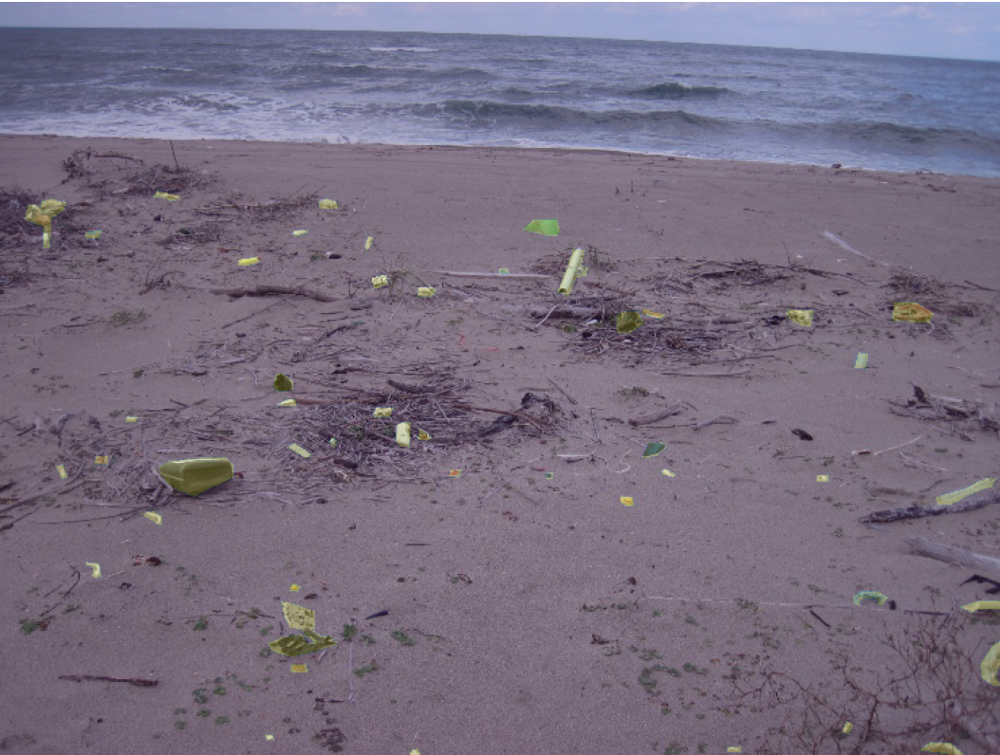

COVID Case Predictions
Comparison of predictions from autoregressive models and compartment models shows that compartment models (namely SIR) had a tendency to over-predict the number of cases in both the short and long term. This was the case even when we took into account vaccinations, which move people straight from the Susceptible category to the Recovered category without passing through the Infected category in an SIR model. We conclude that compartment models, which use assumptions about how the disease spreads, are good for worst case scenario predictions, but are inferior to autoregressive predictions in the short term. Such models can be useful in informing hospitals and clinics.
Technologies used:
- Python
- Pandas
- PyPlot
- Sklearn
- Git/Github
- NetworkX
- Statsmodels
- Requests Library
- Neural Networks
- LaTeX
- Seaborn
- Tableau
Computer Vision for Beach Litter
 A convolutional deep neural network was trained to recognize artificial litter in digital images of the beach. Litter was one of eight classes in this semantic segmentation task: each pixel was assigned one of eight classes. The U-Net architecture for neural networks was used because a pre-trained, light weight MobileNet was available via the keras API. The model has been deployed to a Streamlit app.
Technologies Used:
- Python
- Pandas
- Pillow
- PyPlot
- Git/Github
- Streamlit
- Tensorflow
- Keras
- Convolutional Neural Networks
- Pre-Trained NNs
- Google Cloud Compute
- TensorBoard
Stacked Models for Classification
In this Kaggle style competition, we had 4 hours to make develop a binary classification model to predict if an individual's annual income was over $50k given other census data. Further, each team was given a unique handicap, and our team was given the handicap of a small data set relative to the other teams. We first found the best model hyper-parameters for each class of models (logistic regression, decision trees, k-nearest neighbors, and variations on these like random forest classifiers), using grid-searches over pipelines. We then used Scikit-Learn's StackingClassifer object to stack the best model from each class to generate a stacked model more accurate than any of its parts.
Technologies Used:
- Python
- Pandas
- PyPlot
- Git/Github
- Kaggle
- Scikit Learn
- GridSearchCV
- Pipeline
- Ensemble Methods
- AUC ROC
- © Untitled
- Design: HTML5 UP